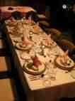
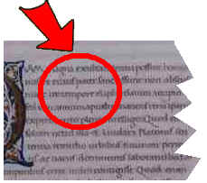

Budapest, XXIV. ker. Fő u. 302. Telefon: +36 (1) 3210-9876. E-mail: info [kukac] palmeriusetterem [pont] hu.

Egy nem mindennapi étterembe hívjuk meg Önt. Az évszázados múltra vissztekintő, és nemrég eredeti helyén újra megnyílt Palmerius étterembe. A nemzetközi könyha remekei mellett kiváló borok és édességek teszik felejthetetlenné az üzleti vagy családi összejövetelt. On-line asztalfoglalási rendszerünknek köszönhetően akár most is lefoglalhatja asztalát (a foglalásról bővebb tudnivalókat az Asztalfoglalás pontban talál).
A századok ködéből...
Már a XIII. századi kódexek is megemlékeznek a Palmerius étteremről, amely nemcsak az akkori királyság területén, hanem az országhatáron túl is kiváló hírnévnek hírnévnek örvendendett.

Részlet egy XIII. sz.-i kódexből. Az étteremre való hivatkozás piros körrel és nyíllal kiemelve.